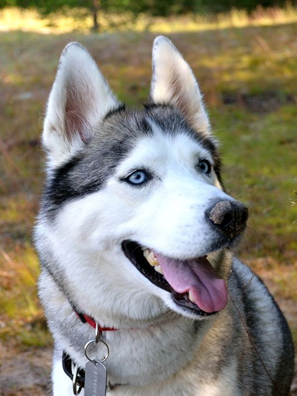
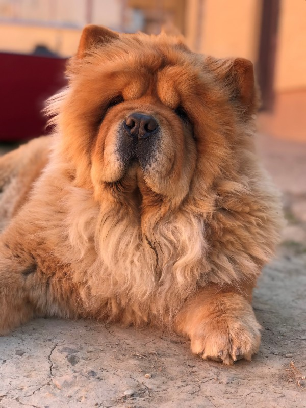

Descubre más sobre las diferentes razas de perros
Los perros han sido compañeros leales del ser humano durante milenios y desempeñan un papel crucial en nuestra vida diaria. Desde ser guardianes de la casa hasta compañeros de juego incondicionales, los perros tienen una conexión única con los humanos que trasciende las barreras del lenguaje y la cultura.
Cada raza de perro tiene sus propias características distintivas, que van desde el tamaño y el pelaje hasta el temperamento y la inteligencia. Por ejemplo, el majestuoso Perro Lobo es conocido por su amabilidad y disposición para trabajar, lo que lo convierte en una opción popular como perro de servicio y compañero de la familia. Por otro lado, la Pomerania, con su aspecto adorable y su naturaleza juguetona, es una raza de perro compacta que se adapta bien a la vida en apartamentos y hogares urbanos.
Descubre qué raza de perro se adapta mejor a tu estilo de vida, aprende sobre sus necesidades específicas y descubre cómo fortalecer el vínculo entre tú y tu mascota!
Perro Lobo
El Perro Lobo es una raza activa y enérgica, conocida por su inteligencia y lealtad.
Pomerania
El Pomerania es una raza pequeña y juguetona, conocida por su pelaje abundante y su personalidad vivaz.
Chow Chow
El Chow Chow es una raza antigua y distinguida, conocida por su pelaje esponjoso y su temperamento independiente.